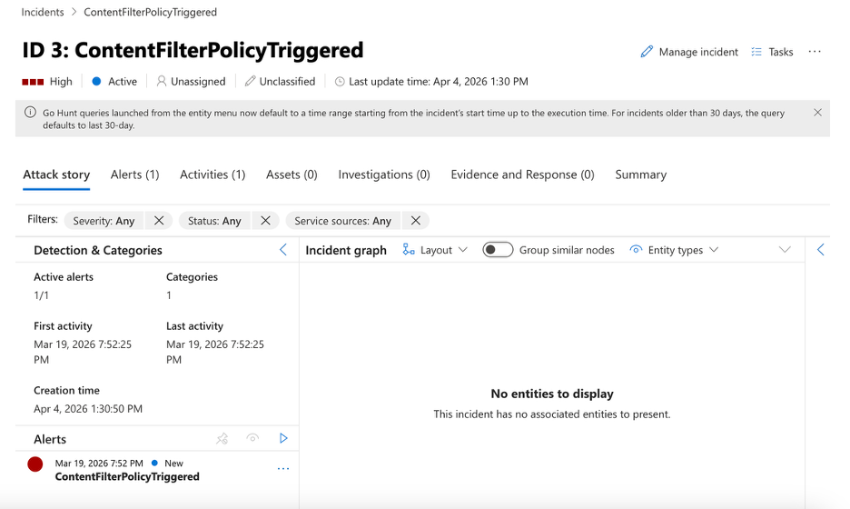
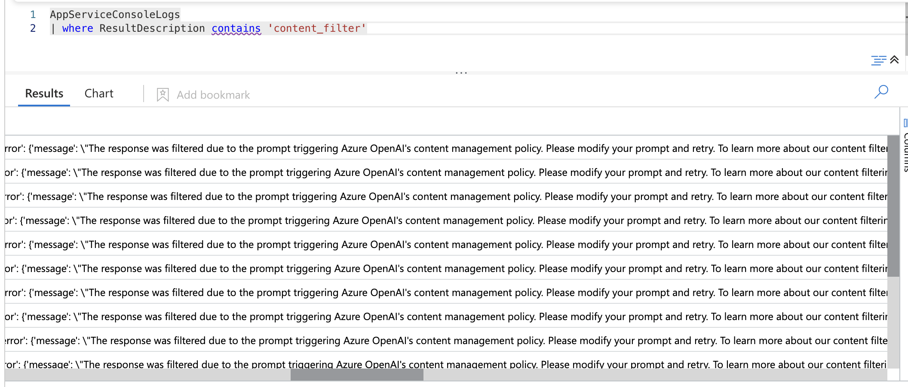
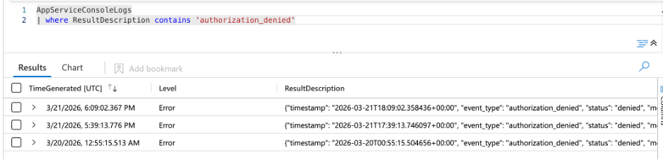
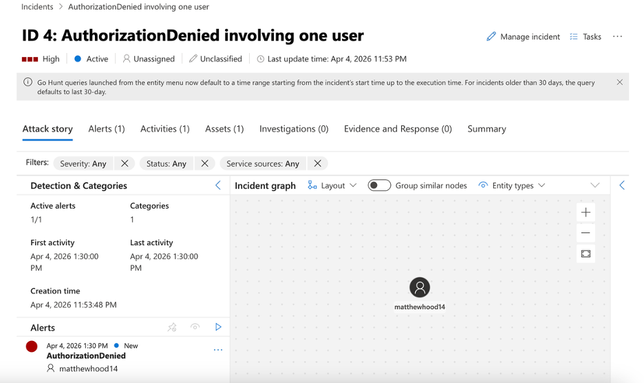
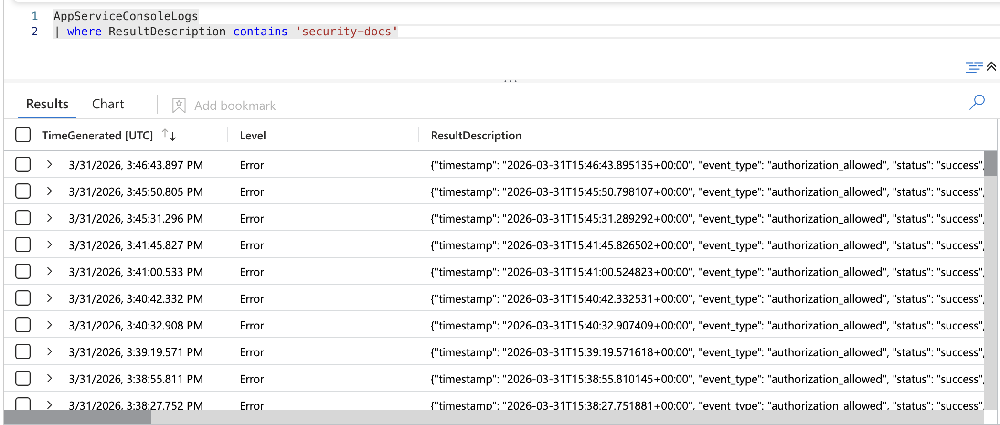
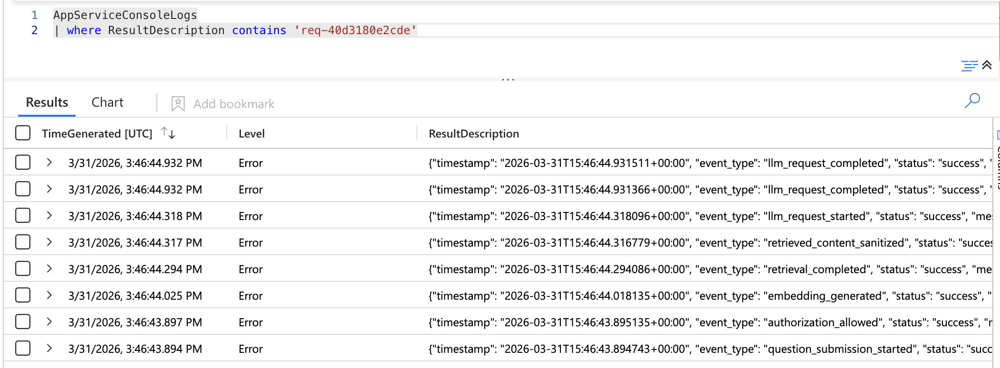

Application events
The application records authorization outcomes, indexing events, retrieval sanitization, model activity, content-filter blocks, and request failures.
Logging & Testing
Logging is part of the design. Application events, Azure diagnostics, Log Analytics queries, and Sentinel detections make it possible to follow what happened across the retrieval system after a test, failure, or attack attempt.
The application records authorization outcomes, indexing events, retrieval sanitization, model activity, content-filter blocks, and request failures.
Azure diagnostics from App Service, Key Vault, and related resources can be routed into Log Analytics, where Sentinel analytics rules can identify suspicious patterns and support investigation.
Sequence walkthroughs
The Sentinel screenshots from SupportingDocs/AppPictures are used inline with the workflows they prove: incident views for prompt injection handling and repeated failed authorizations, then Log Analytics pivots for validation, request-level querying, and cross-system tracing.
That keeps the page restrained. Instead of a separate screenshot gallery, each image appears at the moment an analyst would actually use it.
Step 1: A malicious document chunk includes instructions such as “ignore previous instructions” or attempts to suppress citations.
Step 2: The retrieval pipeline treats that content as untrusted data and strips suspicious lines before the model call when sanitization rules match.
Step 3: The app records events such as retrieved_content_sanitized. If the request cannot safely continue, the workflow can stop before the model call. If Azure OpenAI blocks the request, the app records llm_request_blocked_content_filter.

Step 4: Analysts can later query the request trail, affected document identifiers, and whether sanitization occurred before the model stage.

Sentinel pivot: Start with the content filter incident to show the alert created by the analytics rule, then validate the underlying activity in Log Analytics.
Step 1: A user repeatedly requests a document scope they are not allowed to access.

authorization_denied event in the monitoring pipeline.Step 2: The app records authorization_denied events with the requested scope, user context, and denial reason.
Step 3: Those events land in Log Analytics and are evaluated by a Sentinel analytics rule looking for repeated denials across a time window or unusual access behavior from the same identity.

Step 4: The rule raises an alert for review, and the same workspace can be queried to confirm timing, source pattern, and whether the denials align with a broader probing sequence.

Sentinel pivot: Start with the authorization-denied incident to show the alert itself, then use scope-focused query evidence to confirm the denied request pattern.
Step 1: After a test or suspected incident, the operator pivots into the Sentinel-linked Log Analytics workspace using a request ID, affected user, or specific event type.
Step 2: The query can show whether the request was denied, sanitized, blocked by content filtering, or completed successfully.
Step 3: Related records help answer which document IDs were involved, whether the same user triggered repeated denials, and how activity changed over time.
AppServiceConsoleLogs
| where ResultDescription contains 'authorization_denied'
| summarize count() by CallerIpAddress, bin(TimeGenerated, 15m)
Sentinel pivot: The request-ID query view is the best fit here because it shows the post-test surface used to validate outcomes, timing, and the exact event sequence tied to one transaction.
Step 1: A signed-in user reaches the app and starts a retrieval request.
Step 2: The app evaluates authorization, performs retrieval, and may sanitize risky content before the model call.
Step 3: Azure OpenAI receives scoped context, the request completes or is blocked, and the result is written to application and platform logs.
Step 4: Log Analytics and Sentinel make it possible to follow that same workflow across identity, application, and security layers afterward.

Sentinel pivot: Use the request-trace view here to follow one request across authorization, retrieval, sanitization, and model stages without leaving the workspace.
KQL detections
To finish the monitoring story, the repository now includes a dedicated kql-detections/ folder with Sentinel-ready detection notes, KQL analytics, and hunting queries tuned to the actual Project Aegis application audit schema.
These queries were adjusted to match the app’s real JSON audit events, including event_type, status, and nested details.* fields such as request_id, user_id, requested_scope, filename, and document_id.
AppServiceConsoleLogs
| where ResultDescription contains 'retrieved_content_sanitized'AppServiceConsoleLogs
| where ResultDescription contains 'llm_request_blocked_content_filter'AppServiceConsoleLogs
| where ResultDescription contains 'authorization_denied'
| summarize attempts=count() by ResultDescription, bin(TimeGenerated, 1h)The project can show how retrieval, authorization, hybrid search, model use, and security monitoring fit together rather than treating them as isolated features.
The supporting KQL package lives in kql-detections/ and can be adapted into Sentinel analytics rules, hunting queries, and workbook views without changing the current GitHub Pages deployment model.